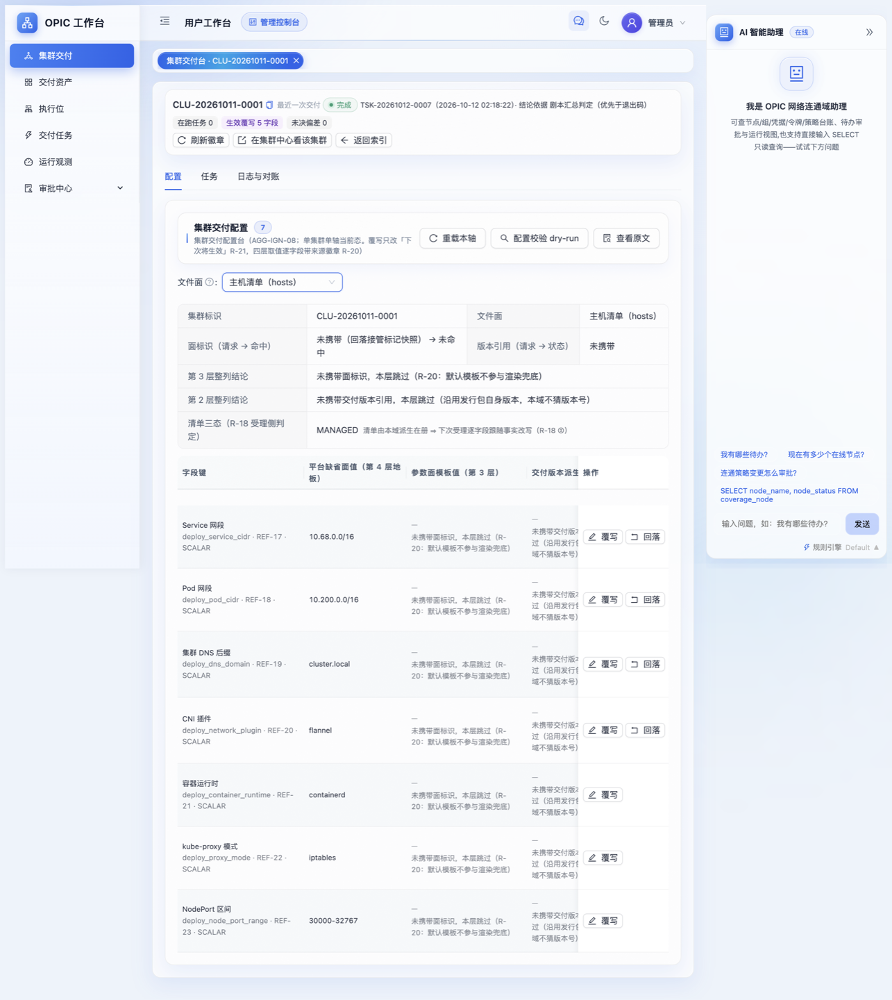
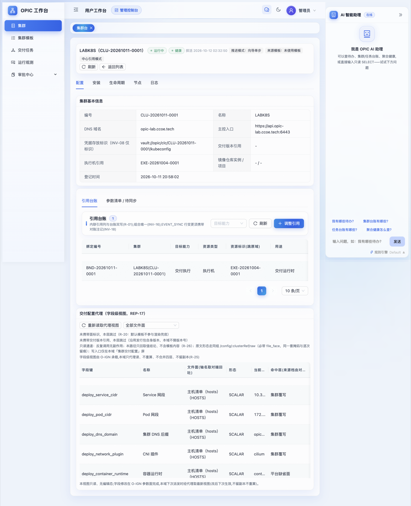
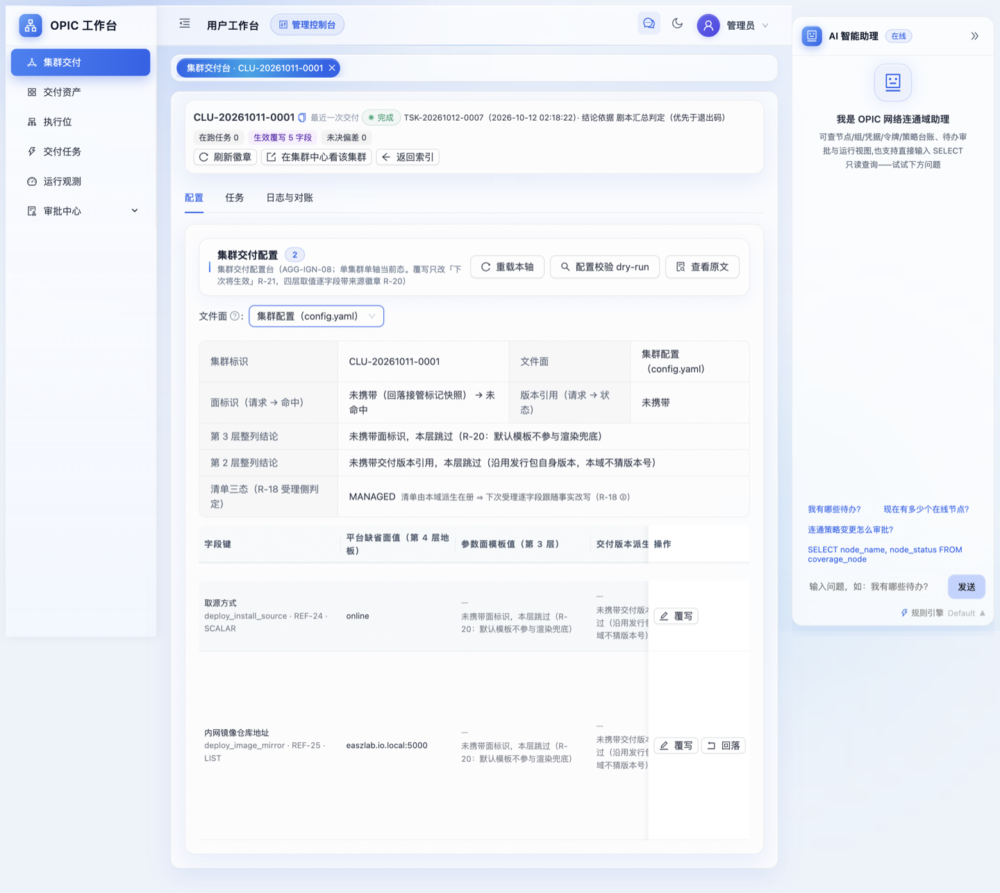
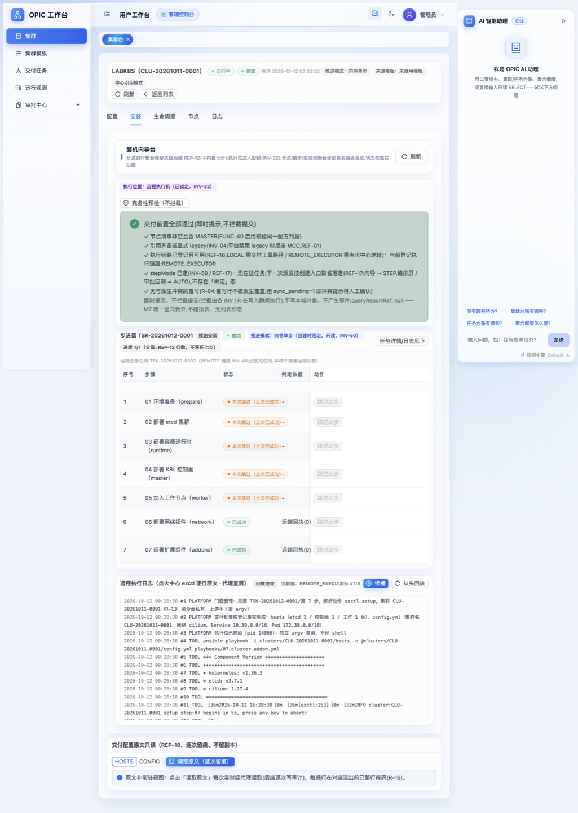
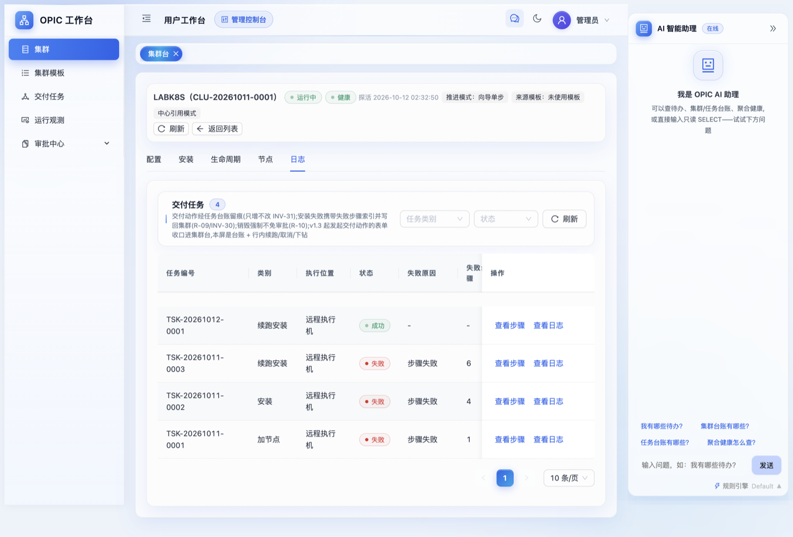
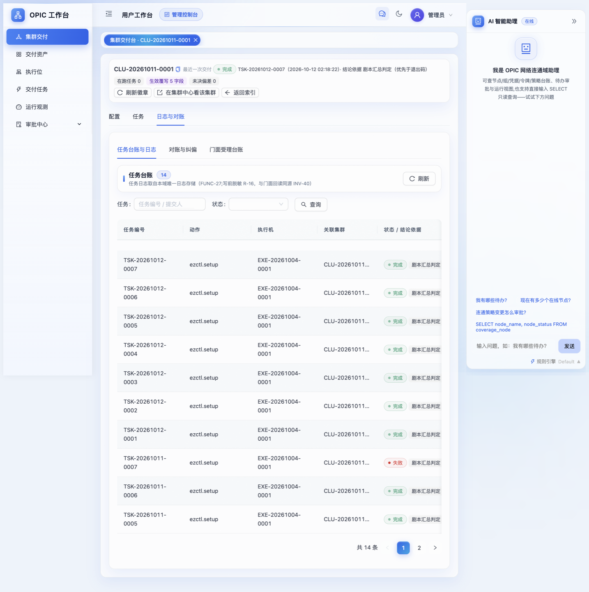
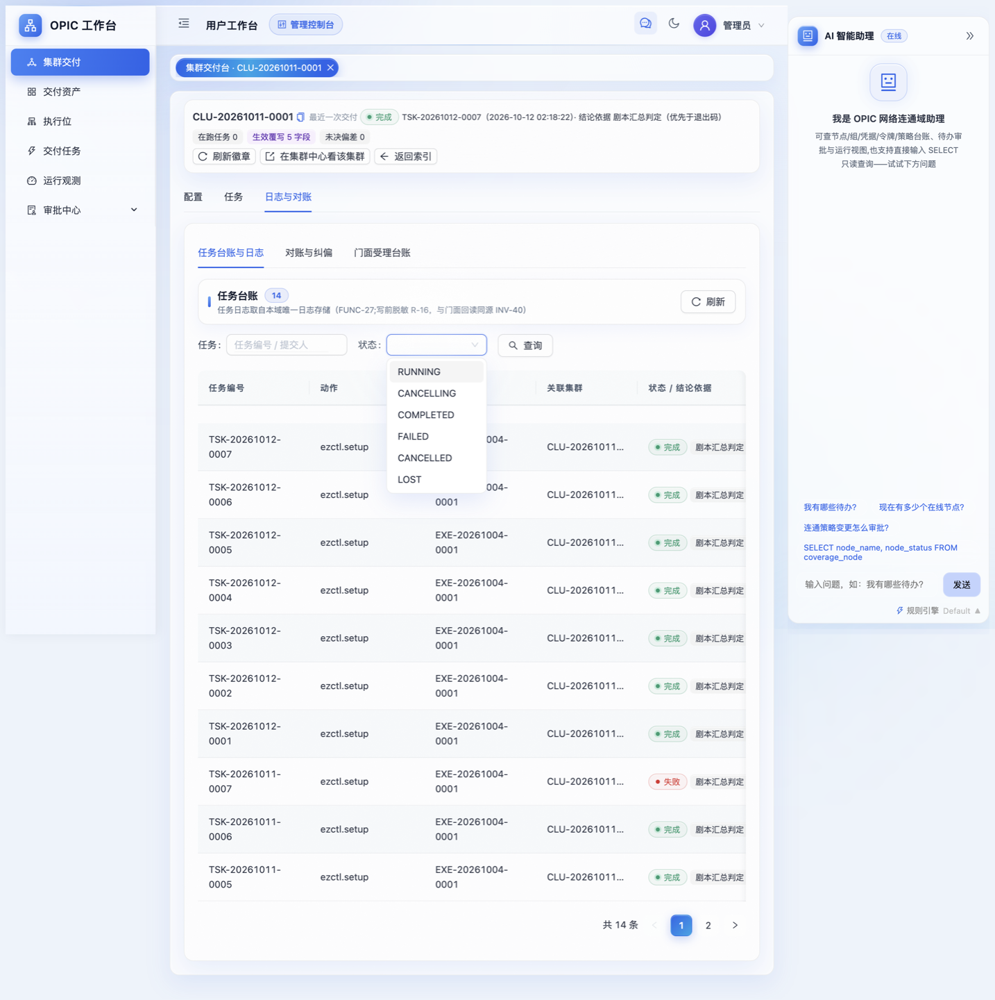
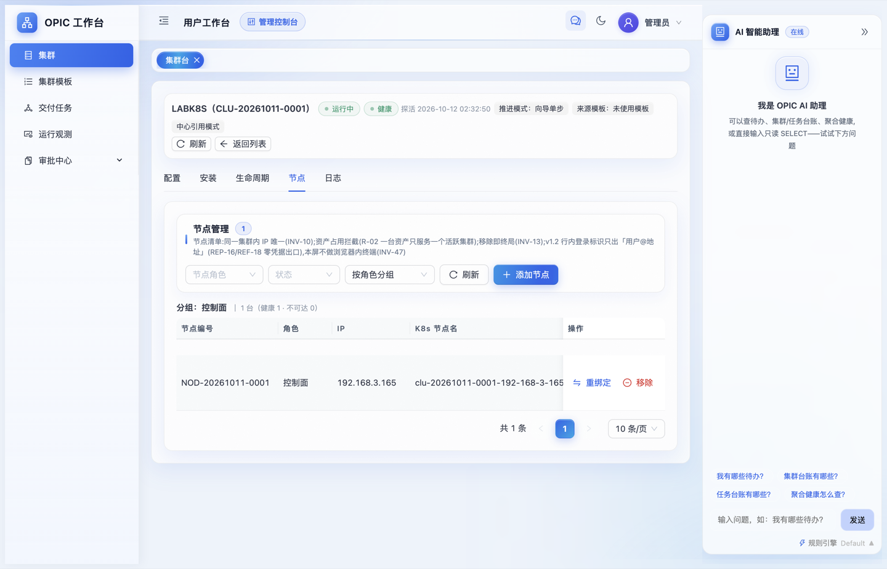

LABK8S 集群交付用户手册
—— 用「点火中心 + 集群中心」的用户工作台，把一台裸机装成可验收的 K8S 集群
| 项 | 值 |
|---|---|
| 交付对象 | 集群 LABK8S（编号 CLU-20261011-0001），单节点 192.168.3.165 |
| 交付方式 | 全程通过两个能力中心的用户工作台界面完成，不手工敲 ezctl |
| 涉及系统 | 点火中心 ignition-center（https://ign.opic-ai.ccoe.tech）、集群中心 cluster-center-mcc（https://clc.opic-ai.ccoe.tech），均部署在 192.168.3.200 |
| 交付底座 | kubeasz 3.7.0 + 执行位 EXE-20261004-0001（local-ignition） |
| 私有镜像仓库 | Harbor 2.12.2 http://harbor.cic.ccoe.tech:18700（192.168.3.200:18700） |
| 手册日期 | 2026-10-12（验收实测数据均为当日采集） |
| 读者 | 新人：照第 4~6 章顺序做即可交付一套集群；管理员：重点看第 7~12 章（定制点、缺陷修复、失败重派、运维 SOP） |
本手册所有截图来自本次真实交付界面，存放于 labk8s-shots/。所有结论都有对应实测命令与输出，见第 6 章与附录 A。
目录
- 本次任务书与最终结果
- 系统地图：两个中心各管什么
- 动手前检查清单
- 操作流程 A：在点火中心把"怎么装"定下来
- 操作流程 B：在集群中心跑七步装机向导
- 交付验收：逐项对账
- 本次交付的三个定制点
- 私有镜像仓库接管：Harbor 侧要做的事
- 失败与重派：单步重试 / 跳步 / 破门径重派
- 日常运维 SOP
- 已知偏差与产品缺口（诚实披露）
- 常见坑速查
1. 本次任务书与最终结果
1.1 任务书原文口径
使用点火中心、集群中心的用户工作台，为192.168.3.165安装名为LABK8S的 K8S 集群。组件配置：k8s v1.36.3、etcd v3.7.1、containerd 2.3.3、runc v1.5.1、cni v1.9.1、coredns 1.14.6、pause 3.10.2、headlamp 0.43.0、higress 2.2.3、cilium 1.17.4、node-problem-detector v1.35.3、kube-prometheus-stack 88.1.5；SERVICE_CIDR=10.39.0.0/16、CLUSTER_CIDR=172.38.0.0/16；域名使用*.opic-lab.ccoe.tech；私有镜像仓库使用http://harbor。
1.2 最终结果（一句话）
已交付并通过实测验收：LABK8S 在集群中心台账为 运行中 / 健康，节点 192.168.3.165 状态 Ready，12 项组件版本与任务书逐字一致，两个网段、域名、私有仓库三项环境口径全部落地；集群内 16 个 Pod 全部 Running，Prometheus 17 个抓取目标全部 up。
1.3 需要你知道的两处"绕了一下"
- 任务书要求的 12 个版本恰好等于 kubeasz 3.7.0 发行包的默认版本目录，所以组件版本一个都没覆写——这不是偷懒，而是"选对交付版本"就能少改配置的正确用法（见 4.2）。
- 私有镜像仓库这项不是一次装好的：集群先按默认离线仓库装完，再切到 Harbor，切换过程需要重跑第 03、07 两步（见第 8、9 章）。这条路径值得新人重点读，因为它就是日常"改配置后怎么让已交付集群跟上"的标准答案。
2. 系统地图：两个中心各管什么
一句话分工：集群中心管"我要什么集群"（业务台账），点火中心管"具体怎么装出来"（交付执行）。
你（运维）
│
├─ 集群中心 CLC https://clc.opic-ai.ccoe.tech
│ 菜单：集群 / 集群模板 / 交付任务 / 运行观测 / 审批中心
│ 集群台页签：配置 · 安装 · 生命周期 · 节点 · 日志
│ 职责：集群台账、节点登记、七步向导推进、探活与健康态、生命周期动作
│ │ 交付动作派发（HTTP 门面，绑定执行位）
│ ▼
├─ 点火中心 IGN https://ign.opic-ai.ccoe.tech
│ 菜单：集群交付 / 交付资产 / 执行位 / 交付任务 / 运行观测 / 审批中心
│ 集群交付台页签：配置 · 任务 · 日志与对账
│ 职责：交付配置四层取值（hosts 面 / config 面）、参数覆写、
│ 配置校验 dry-run、执行 ezctl.setup 01~07、任务与原文日志
│ │ SSH / ansible
│ ▼
└─ 执行位 EXE-20261004-0001（192.168.3.200 上的 kubeasz 3.7.0）
└─ 目标节点 192.168.3.165（被装成 LABK8S 的 master/worker）
└─ 周边：Harbor :18700（镜像）、DNS（*.opic-lab.ccoe.tech → 165）三个必须建立的心智模型：
| 模型 | 含义 | 为什么重要 |
|---|---|---|
| 步骤号是共用的 | 01 环境准备 / 02 etcd / 03 容器运行时 / 04 控制面 / 05 工作节点 / 06 网络插件 / 07 扩展组件，CLC 向导与 IGN 的 ezctl.setup 一一对应 | 排障时你在两边说的是同一件事 |
| 配置只有一份 | 落盘配置在 IGN 侧生成（/etc/kubeasz/clusters/CLU-20261011-0001/{hosts,config.yml}），CLC 只做只读代理视图（REP-17/REP-18） | 改配置只能在点火中心改，在集群中心改不动也不该改 |
| 覆写"下次生效" | 规则 R-21：点火中心的覆写只影响下一次派发，不会自动重跑已完成的步骤 | 这是第 9 章"重派"存在的根本原因 |
3. 动手前检查清单
开始前 10 分钟把这张表打勾，能省掉后面一半的返工。
| # | 检查项 | 怎么查 | 本次实测值 |
|---|---|---|---|
| 1 | 两个中心可登录 | 浏览器打开 CLC / IGN，用工作台账号登录 | 管理员账号可登录，菜单齐 |
| 2 | 目标机 SSH 可达、可 root | 从执行位 ssh root@<目标IP> | 192.168.3.200 → 192.168.3.165 通 |
| 3 | 执行位 READY | IGN → 执行位 | EXE-20261004-0001 local-ignition 127.0.0.1:9709 READY，能力 DEPLOY,SKOPEO,BACKUP,PREFLIGHT,OFFLINE |
| 4 | 交付版本已入库且含所需组件目录 | IGN → 交付资产 / 交付版本 | VER-20261006-0001（kubeasz-3.7.0-k8s-1.36.3） |
| 5 | 镜像可取（离线包或仓库） | 节点上 crictl images / 仓库 catalog | 见第 8 章 |
| 6 | 域名已解析到目标节点 | getent hosts api.<你的域> | api/headlamp/console.opic-lab.ccoe.tech → 192.168.3.165 |
| 7 | 目标机端口没被别人占 | ss -lntp | 80/443 被他人容器占（docker-proxy）、9100 被 ongrid 占 → 触发第 7 章定制点 |
| 8 | 目标机无残留 swap/防火墙干扰 | kubeasz 的 01 步会做，但先自查更快 | 01 步通过 |
| 9 | 你要的网段不与现有网络冲突 | 对照 192.168.3.0/24、已有集群网段 | 10.39.0.0/16、172.38.0.0/16 均空闲 |
| 10 | 若已有同名集群：别碰它 | CLC → 集群列表核对编号 | 既有真集群 CLU-20261007-0001 全程未被触碰 |
新人提示：第 6、7 两项是"装完才发现不对"的高发区。域名不解析→证书 SAN 不对；端口被占→higress/node-exporter 起不来。
4. 操作流程 A：在点火中心把"怎么装"定下来
入口：IGN → 集群交付，进入某个集群的"集群交付台"（页面标题形如 集群交付台 · CLU-20261011-0001）。页内三个页签：配置 / 任务 / 日志与对账。

4.1 第 1 步：绑定执行位（谁来装）
集群台账与执行位的绑定在集群中心侧登记（配置页 → 引用台账），点火中心按绑定接单。本次绑定关系：
| 绑定编号 | 集群 | 目标能力 | 资源类型 | 资源标识 | 用途 |
|---|---|---|---|---|---|
BND-20261011-0001 | LABK8S(CLU-20261011-0001) | 交付执行 | 执行机 | EXE-20261004-0001 | 交付运行时 |

4.2 第 2 步：选交付版本（决定 12 个组件的默认版本）
点火中心的配置是四层取值（规则 R-20），优先级从低到高：
第 4 层 平台缺省面 → 第 3 层 参数面模板值 → 第 2 层 交付版本派生 → 第 1 层 集群覆写（最高，界面标"生效覆写"）做法：在配置页选对交付版本，让第 2 层直接给你要的默认值；只有版本目录给不了的字段才做集群覆写。
本次核对结果（重要经验）：kubeasz 3.7.0 的发行默认版本目录已包含任务书全部 12 项——
k8s v1.36.3 / etcd v3.7.1 / containerd 2.3.3 / runc v1.5.1 / cni v1.9.1
coredns 1.14.6 / pause 3.10.2 / headlamp 0.43.0 / higress 2.2.3
cilium 1.17.4 / node-problem-detector v1.35.3 / kube-prometheus-stack 88.1.5所以组件版本零覆写，配置页顶部"生效覆写"只有 5 个字段（都是网络与仓库口径，见 4.3）。
判断依据在界面上是可见的：配置页每行都有"命中层（来源档）"，本次 12 个版本字段的来源档都是"交付版本派生 / 发行包自身版本"，不是"集群覆写"。
4.3 第 3 步：做 5 条覆写（网络与仓库口径）
在配置页用文件面下拉切换两张表：主机清单（hosts） 与 集群配置（config.yaml）。每行右侧有 覆写 / 回落 按钮。

本次实际写入的 5 条覆写（含界面上填写的理由，理由会落库、可追溯）：
| 文件面 | 字段键 | 名称 | 平台缺省 | 覆写值 | 形态 | 理由（界面填写） |
|---|---|---|---|---|---|---|
| HOSTS | deploy_service_cidr | Service 网段 | 10.68.0.0/16 | 10.39.0.0/16 | SCALAR | 任务书指定 SERVICE_CIDR |
| HOSTS | deploy_pod_cidr | Pod 网段 | 10.200.0.0/16 | 172.38.0.0/16 | SCALAR | 任务书指定 CLUSTER_CIDR |
| HOSTS | deploy_dns_domain | 集群 DNS 后缀 | cluster.local | opic-lab.ccoe.tech | SCALAR | 域名口径 *.opic-lab.ccoe.tech，与集群台账 cluster_dns_domain 同源 |
| HOSTS | deploy_network_plugin | CNI 插件 | flannel | cilium | SCALAR | 任务书列明 cilium 1.17.4 作为 CNI（枚举受 REF-20 约束） |
| CONFIG | deploy_image_mirror | 内网镜像仓库地址 | easzlab.io.local:5000 | harbor.cic.ccoe.tech:18700 | LIST | 私有仓库收敛为内网 Harbor 单点（详见第 8 章） |
未覆写、保持平台缺省的字段（同样值得记住，说明"能不改就不改"）：deploy_container_runtime=containerd、deploy_proxy_mode=iptables、deploy_node_port_range=30000-32767、deploy_install_source=online。
填完必做：点配置页顶部 配置校验 dry-run，再点 查看原文 核对渲染出的 hosts / config.yml 关键行。本次核对到的生效行：
# hosts
[all:vars]
CLUSTER_NETWORK="cilium"
PROXY_MODE="iptables"
SERVICE_CIDR="10.39.0.0/16"
CLUSTER_CIDR="172.38.0.0/16"
CLUSTER_DNS_DOMAIN="opic-lab.ccoe.tech"
NODE_PORT_RANGE="30000-32767"
NODE_CIDR_LEN=24 # 单节点集群：每节点一个 /24
# config.yml（关键行）
K8S_VER: "1.36.3"
ENABLE_MIRROR_REGISTRY: "true"
INSECURE_REG:
- "http://harbor.cic.ccoe.tech:18700" # 只留 Harbor，见 8.3
SANDBOX_IMAGE: "harbor.cic.ccoe.tech:18700/easzlab/pause:3.10.2"
MASTER_CERT_HOSTS: ["192.168.3.165","api.opic-lab.ccoe.tech"]
cilium_ver: "1.17.4" corednsVer: "1.14.6" headlampVer: "0.43.0"
prom_chart_ver: "88.1.5" node_problem_detector_ver: "v1.35.3" higress_ver: "2.2.3"界面顶部徽标生效覆写 5 字段 · 未决偏差 0就是"配置已定稿"的信号；未决偏差非 0 时不要开始装机。
4.4 第 4 步：登记节点（在哪几台机器上装）
节点在集群中心 → 集群台 → 节点页签登记（IP、角色、期望的 k8s_nodename）。单节点 all-in-one 部署时，同一台机器同时进 etcd / kube_master / kube_node 三个组，IGN 会据此渲染 hosts：
[etcd]
192.168.3.165 k8s_nodename=clu-20261011-0001-192-168-3-165
[kube_master]
192.168.3.165
[kube_node]
192.168.3.165节点命名规则：<集群编号小写>-<IP 用短横替换>，便于多集群共用节点时不串号。
5. 操作流程 B：在集群中心跑七步装机向导
入口：CLC → 集群 → 打开 LABK8S → 页签「安装」。

5.1 第 1 步：完备性预检（FUNC-50）
页签顶部是预检面板，把"装下去会不会白装"的前置条件一次查完（执行位绑定、交付版本、节点登记、必填参数、镜像口径…）。全通过再往下走，本次预检结果：全部通过。
预检不通过时，界面会指出缺哪一项、去哪个页签补。这是新人和"直接敲 ezctl"最大的差别：系统替你把门。
5.2 第 2 步：选推进模式
向导支持两种模式，界面上是"推进模式"徽标：
| 模式 | 徽标文案 | 行为 | 适合谁 |
|---|---|---|---|
| 整装 | 一次跑完 01~07 | 提交后自动串完七步 | 环境干净、想一把梭 |
| 向导单步（本次用） | 推进模式：向导单步 | 每步一个"运行第 0X 步"按钮，跑完一步看一眼再点下一步 | 新人学习、共享主机、需要中途改配置 |
单步模式下每步右侧都有 WebSSH 入口，方便你直接去节点上验证（kubectl get pod -A、crictl images 等）。
5.3 第 3 步：依次跑 01~07
七步的界面名称与本次实际结果：
| 步 | 名称 | 本步做什么 | 本次结果 |
|---|---|---|---|
| 01 | 环境准备（prepare） | 内核参数、swap、时间同步、目录与二进制分发 | 成功（耗时 58s） |
| 02 | 部署 etcd 集群 | 生成 etcd 证书、拉起 etcd | 成功（13s） |
| 03 | 部署容器运行时（runtime） | 装 containerd + 写 config.toml、certs.d 取像配置 | 成功（19s；后因切 Harbor 重跑 2 次） |
| 04 | 部署 K8s 控制面（master） | apiserver/controller-manager/scheduler + 证书 SAN | 首次失败（代理劫持域名访问），修复后成功（71s） |
| 05 | 加入工作节点（worker） | kubelet + kube-proxy（systemd 单元） | 成功（4s） |
| 06 | 部署网络插件（network） | cilium 1.17.4 | 首次失败（取像路径），修复后成功（25s） |
| 07 | 部署扩展组件（addons） | coredns / metrics-server / headlamp / npd / prometheus-stack / higress | 首次失败（共享主机端口冲突），定制后成功（47s；后又重跑 3 次） |
每步的"远端回执（0）"表示 ezctl 退出码 0 且 ansible PLAY RECAP 无 failed；这是界面判定成功的依据（结论依据列写"脚本汇总判定"）。
5.4 第 4 步：看日志（两边都能看，看的是同一份）
- CLC → 集群台 → 日志：交付任务台账（4 条），每行
查看步骤/查看日志。

- IGN → 集群交付台 → 日志与对账 → 任务台账与日志：本集群 14 条
ezctl.setup执行记录，可下钻到 ezctl 原文日志（Q-125 打通的 FUNC-51 代理通道，CLC 侧也能直接看到同一份原文）。


5.5 第 5 步：节点登记确认 + 探活
装完后到 节点 页签确认节点从"已登记"变成 ADDED / 健康，然后到 配置 页签点 探活（FUNC-26）。

必须理解的规则（R-08 / REF-03 / REF-11）：健康态转换要连续 3 次同向探活才翻转（防抖）。所以刚装完时集群是 UNKNOWN，需要连点 3 次探活才会变 HEALTHY——这不是 bug，是防抖动设计。本次正是 3 次人工探活（PRB-20261012-0001/0002/0003）把 LABK8S 从 UNKNOWN 推到 HEALTHY。
探活记录字段：apiserver_reachable、tls_handshake_ok、ready_nodes、total_nodes、probe_result；失败时 fail_reason 必填（INV-34）。
5.6 交付完成后你会得到
| 项 | 值 |
|---|---|
| 主控入口 | https://api.opic-lab.ccoe.tech:6443（台账 master_endpoints） |
| 凭据存放标识 | vault://opic/clc/CLU-20261011-0001/kubeconfig（只登记标识，内容不入库，INV-07/INV-08） |
| kubeconfig 实际位置 | 执行位上 /etc/kubeasz/clusters/CLU-20261011-0001/kubectl.kubeconfig |
| 集群内访问 | headlamp.opic-lab.ccoe.tech（NodePort 31800）、console.opic-lab.ccoe.tech（higress-console NodePort 31299） |
| 业务入口 | higress-gateway NodePort 30238(80) / 32231(443) |
注意 kubeconfig 里的server默认是 IP（https://192.168.3.165:6443）。要用域名访问，显式覆盖：SERVER=https://api.opic-lab.ccoe.tech:6443 kubectl --kubeconfig=<...> get --raw=/version
6. 交付验收逐项对账
6.1 组件版本对账（12/12 一致）
| 任务书要求 | 实测（采集于 2026-10-12） | 证据来源 | 结论 |
|---|---|---|---|
| k8s v1.36.3 | v1.36.3 | kubectl get node、kubectl version（client+server） | ✅ |
| etcd v3.7.1 | etcd Version: 3.7.1；endpoint health 4.8ms 健康 | 节点 /opt/kube/bin/etcd --version | ✅ |
| containerd 2.3.3 | 运行中的 daemon = v2.3.3（/opt/kube/bin/containerd-bin/containerd；kubelet 上报 containerd://2.3.3） | systemd ExecStart 指向的二进制 + node.status.nodeInfo.containerRuntimeVersion | ✅（⚠️ 测量口径见 12.4） |
| runc v1.5.1 | runc version 1.5.1 | 节点 runc --version | ✅ |
| cni v1.9.1 | CNI bridge plugin v1.9.1 | 节点 /opt/cni/bin/bridge --version | ✅ |
| coredns 1.14.6 | easzlab.io.local:5000/easzlab/coredns:1.14.6 | Pod spec | ✅ |
| pause 3.10.2 | sandbox = 'harbor.cic.ccoe.tech:18700/easzlab/pause:3.10.2' | 节点 /etc/containerd/config.toml | ✅ |
| headlamp 0.43.0 | easzlab/headlamp:v0.43.0 | Pod spec | ✅ |
| higress 2.2.3 | chart 2.2.3 + 镜像 higress/{higress,pilot,gateway,console}:2.2.3 | helm release + Pod spec | ✅ |
| cilium 1.17.4 | Client: 1.17.4 / Daemon: 1.17.4 | cilium-agent 容器内 cilium version | ✅ |
| node-problem-detector v1.35.3 | 镜像 easzlab/node-problem-detector:v1.35.3 | Pod spec（⚠️ chart 元数据 appVersion 显示 v1.35.1，属上游元数据陈旧，见 11.4） | ✅ |
| kube-prometheus-stack 88.1.5 | chart 88.1.5 | helm release | ✅ |
6.2 网络与域名对账
| 口径 | 要求 | 配置层证据 | 运行时证据 | 结论 |
|---|---|---|---|---|
| Service 网段 | 10.39.0.0/16 | hosts: SERVICE_CIDR | apiserver/kcm 参数 --service-cluster-ip-range=10.39.0.0/16；实际 ClusterIP 10.39.0.1/10.39.0.2/10.39.91.117… | ✅ |
| Pod 网段 | 172.38.0.0/16 | hosts: CLUSTER_CIDR | kcm --cluster-cidr=172.38.0.0/16 --node-cidr-mask-size=24；节点 podCIDR=172.38.0.0/24；Pod IP 172.38.0.x | ✅ |
| 集群 DNS 后缀 | opic-lab.ccoe.tech | hosts: CLUSTER_DNS_DOMAIN | svc FQDN 后缀 …svc.opic-lab.ccoe.tech 出现在 apiserver 证书 SAN | ✅ |
| 外部域名 | *.opic-lab.ccoe.tech | MASTER_CERT_HOSTS 含 api.opic-lab.ccoe.tech | DNS 解析到 192.168.3.165；openssl s_client SAN 含该 DNS 名；带凭据 kubectl --server=https://api.opic-lab.ccoe.tech:6443 get --raw=/version 返回 v1.36.3 | ✅ |
6.3 集群健康对账
| 指标 | 实测 |
|---|---|
| 节点 | clu-20261011-0001-192-168-3-165 Ready master 171m v1.36.3（1/1 Ready） |
| Pod | 全集群 16 个 Pod，16 个 Running，无未就绪 |
| 监控 | Prometheus targets=17 up=17（apiserver/kubelet×3/etcd/coredns/kube-proxy/scheduler/controller-manager/kube-state-metrics/node-exporter/grafana/alertmanager×2/operator/prometheus） |
| DaemonSet | cilium 1/1、node-local-dns 1/1、node-problem-detector 1/1、prometheus-node-exporter 1/1 |
| 台账 | CLC：RUNNING / HEALTHY，最后探活 2026-10-12 02:32:50；IGN：最近一次交付 完成 TSK-20261012-0007，未决偏差 0 |
6.4 验收复核命令（管理员直接抄）
# 在 192.168.3.200 上执行；务必显式指定 kubeconfig，否则会落到别的上下文
export KUBECONFIG=/etc/kubeasz/clusters/CLU-20261011-0001/kubectl.kubeconfig
export NO_PROXY="*" # 见 12.1：3.200 有全局代理，域名访问会被代理拒
kubectl get node -o wide
kubectl get pods -A --no-headers | awk '$4!="Running"' # 期望：无输出
kubectl get pods -A -o json | python3 -c "import json,sys;d=json.load(sys.stdin);print(*sorted({c['image'] for p in d['items'] for c in p['spec']['containers']}),sep='\n')"
kubectl get --raw "/api/v1/namespaces/monitor/services/http:prometheus-operated:9090/proxy/api/v1/targets" \
| python3 -c "import json,sys;d=json.load(sys.stdin)['data']['activeTargets'];print('targets',len(d),'up',sum(t['health']=='up' for t in d))"
# 节点侧版本（etcd/kubelet/cni 二进制在 /opt/kube/bin，不在 PATH）
ssh root@192.168.3.165 '/opt/kube/bin/etcd --version | head -1; runc --version | head -1; /opt/cni/bin/bridge --version'
# containerd：看 systemd 真正用的那个二进制，别看 PATH
ssh root@192.168.3.165 'systemctl show -p ExecStart --value containerd; /opt/kube/bin/containerd-bin/containerd --version | head -1'7. 本次交付的三个定制点
kubeasz 的官方个性化点是角色模板（roles/<role>/templates/**.j2）。改模板前先留 .orig-bak 备份，改完在 /etc/kubeasz 里 git diff 一目了然：
M roles/cluster-addon/templates/higress/values.yaml.j2
M roles/cluster-addon/templates/prometheus/values.yaml.j2
M roles/containerd/templates/easzlab.io.local_5000/hosts.toml.j27.1 higress：关掉 hostNetwork，改用 NodePort
症状：07 步跑完，higress-gateway 起不来。 根因：192.168.3.165 是共享主机，80/443 已被他人容器占用（ss -lntp 显示 docker-proxy）。kubeasz 默认让 higress-gateway 用 hostNetwork: true 直接占主机端口。 改法（官方个性化点，不改代码逻辑）：
higress-core:
gateway:
replicas: 1
- hostNetwork: true
+ hostNetwork: false
nodeSelector:
ingress-controller/provider: higress
service:
- type: ClusterIP
+ type: NodePort结果：higress-gateway 走 Pod 网络 + NodePort 30238/32231，1/1 Running；对外访问用 NodePort 或把域名反代到该端口。 别忘了：gateway 有 nodeSelector，节点必须打标签，否则 Pending：
kubectl label node clu-20261011-0001-192-168-3-165 ingress-controller/provider=higress7.2 higress-console：镜像显式走内网仓库
症状：console 镜像引用会落到公网 hub，节点取不到。 改法：
higress-console:
+ image:
+ repository: easzlab.io.local:5000/higress/console
+ tag: "2.2.3"
replicaCount: 1引用坐标统一走 easzlab.io.local:5000（再由 7.3 的重定向落到 Harbor），集群里所有 addon 镜像都是同一口径：cilium、prometheus、headlamp、node-problem-detector 的 values 里 registry/repository 全部指向 easzlab.io.local:5000。
7.3 prometheus-node-exporter：关掉 hostNetwork
症状：node-exporter CrashLoop / 端口绑定失败。 根因：主机 9100 已被 ongrid 容器占用，而 node-exporter 默认 hostNetwork: true 要占 9100。 改法：
prometheus-node-exporter:
+ hostNetwork: false
image:
registry: easzlab.io.local:5000结果：node-exporter 用 Pod IP 提供指标，Prometheus 抓取正常（node-exporter up）。 代价（管理员需知）：非 hostNetwork 下 exporter 看到的是 Pod 网络视角，部分宿主网卡/文件系统指标语义会变；独占主机上建议改回 hostNetwork: true 或换端口。
7.4 改完模板后怎么让它生效
模板只影响下一次渲染，所以要走第 9 章的重派流程（本次是删在位 Deployment + 重跑 07 步）。
8. 私有镜像仓库接管：Harbor 侧要做的事
任务书要求"私有镜像仓库使用 http://harbor"。本章是完整做法 + 本次踩到的 Harbor 存量缺陷。
8.1 目标形态
Pod spec 里的镜像引用（保持不变） containerd certs.d 重定向 实际服务方
easzlab.io.local:5000/cilium/cilium ───────────────────────────▶ harbor.cic.ccoe.tech:18700/cilium/cilium
easzlab.io.local:5000/easzlab/pause （pause 直接写成 Harbor 地址） harbor.cic.ccoe.tech:18700/easzlab/pause好处：镜像引用不用改，只改取像路径；回退时把 hosts.toml 换回去即可。
8.2 把镜像装进 Harbor（本次用"复制拉取"，不用 push）
Harbor 建好同名 project（easzlab / cilium / higress / prometheus / flannel，本次设为公开，节点可匿名 bearer-token 拉取），然后配一个从本地离线仓库 :5000 拉取的复制策略 lab-from-ign-mirror 并触发 execution：
2026-10-12 01:55:05 ~ 01:55:22 execution 24 Succeed
落库仓库数：easzlab 9 + cilium 2 + higress 4 + prometheus 7 (+ flannel 2) = 24 个仓库为什么用复制拉取而不是 push：本次 push 路径当时不可用（见 8.4 缺陷），而 Harbor 的"从源仓库 pull"能绕开写入鉴权链路，且不动别人的镜像。
凭据使用纪律（新人务必照做）：Harbor 账号口令放在一个 root-only 的 curl 配置文件里（本次 /tmp/harbor.cfg，位于 3.200），只允许 curl -K /tmp/harbor.cfg 这种形式引用；绝不 cat 该文件、绝不把口令写进任何交付物/日志/命令行参数。
8.3 节点侧：certs.d 重定向 + INSECURE_REG 的坑
改 kubeasz 的 containerd 角色模板，让离线仓库的取像路径指向 Harbor：
# roles/containerd/templates/easzlab.io.local_5000/hosts.toml.j2
-server = "http://easzlab.io.local:5000"
+# 离线包暂存仓库(easzlab.io.local:5000)的取像路径改由内网 Harbor 承载：
+# 引用坐标保持不变，实际由 harbor.cic.ccoe.tech:18700 服务（同一 project/repo 路径）。
+server = "http://harbor.cic.ccoe.tech:18700"
-[host."http://easzlab.io.local:5000"]
+[host."http://harbor.cic.ccoe.tech:18700"]
capabilities = ["pull", "resolve"]
skip_verify = true落盘结果（节点上 /etc/containerd/certs.d/easzlab.io.local:5000/hosts.toml）与之一致；/etc/hosts 保留 192.168.3.200 easzlab.io.local 作为兜底。
⚠️ 关键坑（本次踩过，务必记住）：kubeasz 的 containerd 角色会按 INSECURE_REG 列表逐条回写 certs.d/<host>/hosts.toml，最后一条会覆盖同名文件。如果 INSECURE_REG 里同时有 easzlab.io.local:5000，你手工改的重定向模板就会被冲掉回默认值。
# config.yml —— 正确写法：只留 Harbor，不要加 easzlab
INSECURE_REG:
- "http://harbor.cic.ccoe.tech:18700"这也是为什么 deploy_image_mirror（REF-25，LIST 形态）在界面上要收敛成只填 Harbor 一项。
改完 config.yml / 模板后，必须重跑 03 步（容器运行时）才会把 certs.d 重写；再重跑 07 步让 addons 从 Harbor 取镜像。本次即 IGN → 交付任务 → 重派 03 → 重派 07（见 9.3）。
8.4 Harbor 存量缺陷与修复记录（管理员案例）
症状：向 Harbor 推送/复制镜像一律失败（v2 写入路径报 400/401），但匿名拉取公开项目完全正常——很容易误判成"网络或权限问题"。
定位过程（全部只读排查）：
docker ps看 Harbor 组件全healthy，/api/v2.0/health也全绿 → 不是组件挂了。- 看 registry 配置：
/opt/harbor/common/config/registry/config.yml（Harbor 2.12 的registry容器把该目录挂到/etc/registry）：
``yaml auth: htpasswd: realm: harbor-registry-basic-realm path: /etc/registry/passwd ``
即：registry 的写入鉴权依赖 /etc/registry/passwd。
- 进容器看这个路径 → 容器里的
/etc/registry是空的/旧的：宿主机上该配置目录在容器启动之后被重建过，容器的 bind mount 仍指向已删除的旧 inode（stale mount）。于是 registry 读不到当前passwd，与 harbor-core 注入的 Basic 凭据失配 → 所有 v2 写请求被拒。
结论：这是 Harbor 实例的存量偏差，与本次交付动作无关；拉取不受影响是因为公开项目匿名 token 路径不经过这条 htpasswd 校验。
修复：根因修复 = 让 bind mount 重新解析 → docker restart registry（只重启 registry 一个容器，不动整个 Harbor、不重启 dockerd）。
registry 容器 StartedAt = 2026-10-11T17:52:36Z（本地 01:52:36），RestartCount=0
重启后 01:55:05~01:55:22 复制 execution 24 成功装载 24 个仓库给管理员的两条经验：
- 判断"stale mount"的通用手法：
docker inspect <c> --format '{{range .Mounts}}{{.Source}} -> {{.Destination}}{{end}}'拿到宿主源路径，比较宿主目录 ctime/inode 与容器启动时间；若宿主目录比容器新，八成是挂载陈旧。 - 重启共享组件前先确认：它当前已经是坏的（重启是修复而非碰运气）、影响面（只有 registry）、以及是否有他人在用。本次符合"根因修复"而非"走捷径重启共享设施"。
9. 失败与重派：单步重试 / 跳步 / 破门径重派
9.1 单步重试（最常用）
入口：CLC → 集群台 → 安装页签 → 失败步骤上的"重试本步"（FUNC-44），或 IGN → 交付任务 → 对该步重派 ezctl.setup <步>。
规则 INV-03：续跑安装时，上次已成功的步骤不会重跑，界面上显示 本次跳过（上次已成功）。本次最后一条成功任务 TSK-20261012-0001 的步骤行就是活教材：
1|01 环境准备（prepare） SKIPPED 上次任务该步已成功（INV-03 不重跑）
2|02 部署 etcd 集群 SKIPPED 同上
3|03 部署容器运行时（runtime） SKIPPED 同上
4|04 部署 K8s 控制面（master） SKIPPED 同上
5|05 加入工作节点（worker） SKIPPED 同上
6|06 部署网络插件（network） SUCCEEDED setup CLU-20261011-0001 06
7|07 部署扩展组件（addons） SUCCEEDED setup CLU-20261011-0001 079.2 跳步（FUNC-45）
某步确实不需要（例如插件已在别处装好），可在向导里跳步。慎用：跳过 03/06 这类基础步会让后续步骤在错误前提上运行。
9.3 破门径重派（改完配置让已完成的步骤重跑）
问题：INV-03 让"上次成功"的步骤不再重跑，但配置改了必须重跑（例如 8.3 改了 certs.d 模板、7.x 改了 values）。
口径（本次实际用过 5 次，全部成功）：
- 在 IGN 配置页确认覆写/模板已改好，
配置校验 dry-run通过； - 删掉在位的旧对象，让重跑的步骤有"可写"的落点：
``bash # 例：改了 higress values 后，删在位 Deployment 让 07 步重建 kubectl -n higress-system delete deploy higress-gateway higress-console # 例：改了 node-exporter values 后 kubectl -n monitor delete ds prometheus-prometheus-node-exporter ``
helm release 仍在位，所以 07 步会走 upgrade；删的是渲染产物，不是发布记录。
- 在 IGN 交付任务台对该步人工重派（本次
ezctl.setup 03两次、07三次，任务号TSK-20261012-0003 ~ 0007，提交人admin，全部COMPLETED）； - 回 CLC 配置页签点
探活，必要时连续 3 次让健康态翻转； - 到 IGN 配置页确认
未决偏差 0。
为什么界面上"应用追溯"还显示未应用：见 11.2（覆写无即时应用腿，属已知产品缺口，本次用"派生值前移"手工闭合）。
9.4 本次真实失败与修复对照（新人最该看的一节）
| 失败点 | 现象 | 根因 | 修复 | 复跑结果 |
|---|---|---|---|---|
| 04 步（首次） | 控制面组件访问 apiserver Forbidden | 3.200 全局代理 NO_PROXY 不含 *.opic-lab.ccoe.tech，域名流量被代理劫持 | 访问侧显式 NO_PROXY="" / --noproxy ''；域名口径本身正确 | 04 步 71s 成功 |
| 06 步（首次） | cilium 镜像取不到 | 离线仓库 catalog 缺 cilium 相关仓库 | 补齐 cilium/{cilium,operator-generic} 到镜像源 | 06 步 25s 成功 |
| 07 步（首次） | gateway / node-exporter 起不来 | 共享主机 80/443/9100 被他人容器占用 | 7.1 / 7.3 两个定制点 + 9.3 破门径重派 | 07 步 47s 成功，后续 3 次重派均成功 |
| 切 Harbor 后 | 节点仍从 :5000 取像 | INSECURE_REG 含 easzlab 时会回写并覆盖 hosts.toml | INSECURE_REG 只留 Harbor + 重跑 03/07 | 未缓存镜像实测由 Harbor 服务 |
10. 日常运维 SOP
| 频次 | 动作 | 界面入口 | 判据 |
|---|---|---|---|
| 每日 | 集群探活 | CLC → 集群台 → 配置 → 探活 | apiserver_reachable=1、tls_handshake_ok=1、ready_nodes=total_nodes |
| 每日 | 看健康聚合 | CLC → 运行观测（GET /api/clc/health/aggregate） | 无 DEGRADED/UNHEALTHY |
| 每日 | 看未决偏差 | IGN → 集群交付台顶部徽标 | 未决偏差 0 |
| 每周 | 节点/组件盘点 | CLC → 节点页签（分组视图）+ kubectl get pods -A | 无 ADDED 之外的悬挂节点；无非 Running Pod |
| 变更 | 改配置 → 重派 | IGN 配置页覆写 → 9.3 破门径重派 | 任务 COMPLETED、dry-run 通过 |
| 变更 | 证书临期 | 生命周期台"证书轮换"动作（FUNC-46 派发） | 平台参数 cert_renew_days=14 提前量 |
| 备份 | 集群 etcd 快照 | 生命周期台"备份"动作 | 快照落 /etc/kubeasz/clusters/<no>/backup |
| 收尾 | 销毁集群 | 生命周期台"销毁"（强制不免审批，R-09/R-10/R-30） | 台账 DESTROYED；失败可重新申请销毁 |
健康态语义（别误读）：UNKNOWN = 还没探够次数；HEALTHY = 连续 3 次通过；DEGRADED = 部分不可用（探活不会覆盖它，INV-06）；UNHEALTHY = 连续 3 次失败。
目前没有定时探活：FUNC-26 是人工探活入口，健康态不会自己刷新（见 11.3）。巡检时"探活时间"落后就要手动点一次。
11. 已知偏差与产品缺口（诚实披露）
| # | 现象 | 影响 | 本次怎么绕过 | 建议 |
|---|---|---|---|---|
| 11.1 | CLC 集群台账 registry_ref / registry_project_ref / version_ref 留空，配置页"镜像仓库实例/项目"显示 - / - | 聚合视图看不到仓库归属 | 取像口径统一放在 IGN 参数面（deploy_image_mirror）+ 节点 certs.d | 填这三列需要镜像仓库中心的真实实例引用；宁缺不假——不要为了界面好看填一个主机名字符串 |
| 11.2 | deploy_image_mirror 覆写行的 applied_task_no 为空 → 界面显示"当前落盘 = harbor 值"但"应用追溯 = 未应用" | 看起来矛盾，容易误判配置没生效 | 磁盘值是在安装族受理之外前移落盘的（人工重派 03/07），故无追溯号 | 产品缺口：覆写缺"即时应用腿"。需要"改一次配置就重放到在跑集群"的能力 |
| 11.3 | 无定时探活（只有人工探活） | 健康态可能长期停留在旧值 | 每日巡检手动探活 | 建议加平台级定时探活任务 |
| 11.4 | node-problem-detector chart 的 appVersion 元数据写 v1.35.1，实际镜像 v1.35.3 | 只看 helm 元数据会误判版本不符 | 以 Pod spec 镜像 tag 为验收依据 | 上游 chart 元数据陈旧，反馈即可 |
| 11.5 | 交付版本 VER-20261006-0001 状态为 DRAFT | 若启用"版本须可用"强校验（REF-19）会拦住受理 | 本次装机在该状态下完成 | 正式环境请把版本置为可用态再交付 |
| 11.6 | kube-proxy 在 kubeasz 是 systemd 单元，不是 DaemonSet；k8s 1.36 节点 kubeProxyVersion 字段为空 | 用 kubectl get ds -A 找不到 kube-proxy 会以为没装 | 查 systemctl status kube-proxy 与 Prometheus kube-proxy target（本次 up） | 写巡检脚本时别按 DaemonSet 假设 |
12. 常见坑速查
12.1 开发测试环境的全局代理会劫持域名
3.200 环境有海外出口代理：
https_proxy=http://10.26.8.196:3228
NO_PROXY=localhost,127.0.0.1,192.168.0.0/16,10.0.0.0/8,.opic-ai.ccoe.tech,.svc,.cluster.localNO_PROXY 里没有 .opic-lab.ccoe.tech，于是 curl https://api.opic-lab.ccoe.tech:6443 得到 CONNECT tunnel failed, response 403、kubectl 得到 Unable to connect to the server: Forbidden。 这是环境事实，不是集群缺陷。 处置：export NO_PROXY=""（或 --noproxy '*'、把域名加进 NO_PROXY）。
12.2 必须显式指定 kubeconfig
/etc/kubeasz/clusters/CLU-20261011-0001/kubectl.kubeconfig 只存在于 3.200。在 165 上用这个路径不会报错、会静默回落到别处上下文。多集群环境请始终 export KUBECONFIG=<完整路径>。
12.3 工具不在 PATH
| 工具 | 实际路径 | 位置 |
|---|---|---|
etcdctl / etcd / kubelet / kubectl | /opt/kube/bin/ | 节点 165 |
helm | /etc/kubeasz/bin/helm | 执行位 3.200 |
ezctl | /etc/kubeasz/ezctl | 执行位 3.200 |
12.4 containerd 版本要用"真正在跑的那个二进制"测
containerd --version → v2.3.6 ← PATH 上的发行版二进制，k8s 没用它
systemctl show -p ExecStart --value containerd → /opt/kube/bin/containerd-bin/containerd
/opt/kube/bin/containerd-bin/containerd --version → v2.3.3 ← 正确
kubectl get node -o jsonpath='{...containerRuntimeVersion}' → containerd://2.3.3 ← 最权威12.5 etcd 健康检查别连 localhost
etcd 的 127.0.0.1:2379 监听是明文，用 https 连会报 unhealthy / context deadline exceeded。正确：
/opt/kube/bin/etcdctl --endpoints=https://192.168.3.165:2379 \
--cacert=/etc/kubernetes/ssl/ca.pem --cert=/etc/kubernetes/ssl/etcd.pem --key=/etc/kubernetes/ssl/etcd-key.pem \
endpoint health # → healthy: successfully committed proposal: took = 4.8ms12.6 节点重装后 SSH 主机指纹变了
REMOTE HOST IDENTIFICATION HAS CHANGED → 内层 ssh 加 -o StrictHostKeyChecking=no -o UserKnownHostsFile=/dev/null（本次装机过程中 165 的主机密钥被重建）。
12.7 Harbor 匿名 HEAD 返回 401 是正常的
Harbor 的 token 认证会先回 401 + WWW-Authenticate 挑战。判断"能不能拉"要走完整 token 流程（page.fetch / curl -K <cfg>），别把 HEAD 401 当故障。
12.8 数据库排查：连接方式与列名
- PG 在 3.200 宿主 :5433 监听（不是容器内 socket），连接参数从
opic-clc-app/opic-ign-app容器 env 读； - 必须 schema 限定表名（
clc.clc_cluster、ign.exec_task），search_path没设； - 时间列多为
text（to_char存），别再套to_char(col,'...')； - 关联列叫
cluster_ref（值形如CLU-20261011-0001或数字 id），不是cluster_no； - 口令只从 env 读、只用于连接，绝不打印（白名单脱敏要整键匹配，
PASS|SECRET挡不住DB_PASSWORD）。
附录 A：本次交付的台账数据快照
A.1 集群中心（schema clc）
集群 clc.clc_cluster：
id=55 | cluster_no=CLU-20261011-0001 | name=LABK8S | status=RUNNING | health=HEALTHY
master_endpoints=https://api.opic-lab.ccoe.tech:6443
kubeconfig_ref=vault://opic/clc/CLU-20261011-0001/kubeconfig
cluster_dns_domain=opic-lab.ccoe.tech | run_mode=MCC | install_step_index=NULL（已清空=装完）
version_ref=(空) | registry_ref=(空) | registry_project_ref=(空) ← 见 11.1
created_at=2026-10-11 20:58:02 | last_probe_at=2026-10-12 02:32:50任务 clc.clc_task（执行路径全部 REMOTE_EXECUTOR，remote_task_ref 指向 IGN 任务）：
| 任务号 | 类别 | 状态 | 失败原因 | 失败步骤 | 远端任务 | 起止 |
|---|---|---|---|---|---|---|
| TSK-20261011-0001 | 加节点 | FAILED | STEP_FAILED | 1 | - | 10-11 21:01:07 |
| TSK-20261011-0002 | 安装 | FAILED | STEP_FAILED | 4 | TSK-20261011-0004 | 10-11 21:04:45 → 23:35:08 |
| TSK-20261011-0003 | 续跑安装 | FAILED | STEP_FAILED | 6 | TSK-20261011-0007 | 10-11 23:47:14 → 23:52:06 |
| TSK-20261012-0001 | 续跑安装 | SUCCEEDED | - | - | TSK-20261012-0002 | 10-12 00:26:00 → 00:29:28 |
节点 clc.clc_cluster_node：
NOD-20261011-0001 | MASTER | 192.168.3.165 | clu-20261011-0001-192-168-3-165 | ADDED | HEALTHY（2026-10-12 00:29:28）探活 clc.clc_probe：
PRB-20261012-0001 | 02:31:54 | MANUAL | apiserver=1 tls=1 ready=1/1 | HEALTHY
PRB-20261012-0002 | 02:32:50 | MANUAL | apiserver=1 tls=1 ready=1/1 | HEALTHY
PRB-20261012-0003 | 02:32:50 | MANUAL | apiserver=1 tls=1 ready=1/1 | HEALTHY绑定 clc.clc_binding：BND-20261011-0001 | EXECUTOR | EXE-20261004-0001 | EXECUTOR_RUNTIME | IGNITION | MANUAL
A.2 点火中心（schema ign）
执行位：EXE-20261004-0001 local-ignition | LOCAL 127.0.0.1:9709 | READY | 能力 DEPLOY,SKOPEO,BACKUP,PREFLIGHT,OFFLINE 交付版本：VER-20261006-0001 kubeasz-3.7.0-k8s-1.36.3（tool 3.7.0，包内默认 CNI 为 flannel，故 CNI 走覆写切 cilium）
执行任务台账 ign.exec_task（本集群 14 条，动作均为 ezctl.setup，结论依据 PLAY_RECAP）：
| 任务号 | 步 | 状态 | 耗时 | 提交人 | 来源任务 |
|---|---|---|---|---|---|
| TSK-20261011-0001 | 01 | COMPLETED | 58s | ignition-agent | TSK-20261011-0002 |
| TSK-20261011-0002 | 02 | COMPLETED | 13s | ignition-agent | 同上 |
| TSK-20261011-0003 | 03 | COMPLETED | 19s | ignition-agent | 同上 |
| TSK-20261011-0004 | 04 | FAILED | 17s | ignition-agent | 同上 |
| TSK-20261011-0005 | 04 | COMPLETED | 71s | ignition-agent | TSK-20261011-0003 |
| TSK-20261011-0006 | 05 | COMPLETED | 4s | ignition-agent | TSK-20261011-0003 |
| TSK-20261011-0007 | 06 | FAILED | 7s | ignition-agent | TSK-20261011-0003 |
| TSK-20261012-0001 | 06 | COMPLETED | 25s | ignition-agent | TSK-20261012-0001 |
| TSK-20261012-0002 | 07 | COMPLETED | 47s | ignition-agent | TSK-20261012-0001 |
| TSK-20261012-0003 | 07 | COMPLETED | 7s | admin（人工重派） | - |
| TSK-20261012-0004 | 07 | COMPLETED | 27s | admin | - |
| TSK-20261012-0005 | 03 | COMPLETED | 11s | admin | - |
| TSK-20261012-0006 | 03 | COMPLETED | 11s | admin | - |
| TSK-20261012-0007 | 07 | COMPLETED | 11s | admin | - |
覆写台账 ign.ign_cluster_config_override：5 行，override_status=EFFECTIVE；4 行 HOSTS 面已带 applied_task_no=TSK-20261012-0002，CONFIG 面 deploy_image_mirror 的 applied_task_no 为空（见 11.2）。
附录 B：完整时间线
| 时间（本地） | 事件 |
|---|---|
| 10-11 20:58 | CLC 创建 LABK8S 台账（id=55） |
| 10-11 21:01 | 加节点任务失败（步骤 1，前置不足） |
| 10-11 21:04 | 安装族首次受理，01/02/03 连跑成功 |
| 10-11 23:34 | 04 步失败（代理劫持域名） |
| 10-11 23:47 | 04 步重试成功、05 成功 |
| 10-11 23:51 | 06 步失败（cilium 镜像缺） |
| 10-12 00:26 | 续跑安装 TSK-20261012-0001：06/07 成功，集群交付完成 |
| 10-12 00:29 | 节点转 ADDED，台账 RUNNING |
| 10-12 01:05~02:13 | 私有仓库切 Harbor：填 Harbor 24 仓库、改 certs.d 模板、INSECURE_REG 收敛 |
| 10-12 01:52 | Harbor registry 容器重启（stale mount 根因修复） |
| 10-12 01:55 | 复制 execution 24 成功装载 24 仓库 |
| 10-12 01:24~02:18 | 人工重派 5 次（07×3、03×2），端口冲突定制点生效 |
| 10-12 02:31~02:32 | 连续 3 次人工探活 → 健康态 UNKNOWN → HEALTHY |
| 10-12 02:34~02:40 | 界面取证（9 张截图）+ 全量实测对账（16 Pod / 17 target） |
附录 C：术语速查
| 术语 | 含义 |
|---|---|
| 集群中心 CLC | 集群台账与生命周期管理；https://clc.opic-ai.ccoe.tech，API 前缀 /api/clc/... |
| 点火中心 IGN | 交付执行与配置权威；https://ign.opic-ai.ccoe.tech，API 前缀 /api/v1/ign/... |
| 用户工作台 | 业务界面（本手册全部用它）；管理控制台 是 /admin/*，另一套东西 |
| 集群台 / 集群交付台 | 两个中心各自的"单集群详情页"，页签组织 |
| 执行位 / 执行机 | 真正跑 ezctl 的机器（本次 EXE-20261004-0001） |
| 交付版本 | 组件版本目录（VER-*），决定第 2 层派生值 |
| 文件面 | 配置落点的分类：主机清单（hosts） / 集群配置（config.yaml） |
| 四层取值 R-20 | 平台缺省面 → 交付版本派生 → 参数面模板 → 集群覆写 |
| 下次将生效 R-21 | 覆写只影响下一次派发，不自动重跑已完成步骤 |
| INV-03 | 续跑时上次成功的步骤跳过 |
| 破门径重派 | 删在位渲染产物 + 人工重派该步，让改后的配置落到在跑集群（9.3） |
| 探活（FUNC-26） | 人工触发的 apiserver/TLS/节点就绪检查；连续 3 次同向才翻转健康态 |
| 凭据存放标识 INV-07/INV-08 | 台账只存 vault://... 这类标识，凭据内容不进数据库 |
| OPIC 统一响应 | {"returnInfo":{"returnCode":"SUC0000","errorMsg":""},"data":...} |
交付物清单
| 文件 | 说明 |
|---|---|
docs/LABK8S交付用户手册-2026-10-12.md | 本手册（Markdown 源） |
docs/LABK8S交付用户手册-2026-10-12.html | 本手册（可直接浏览器打开/打印） |
docs/labk8s-shots/*.png | 9 张真实界面截图（统一 1440px 宽） |